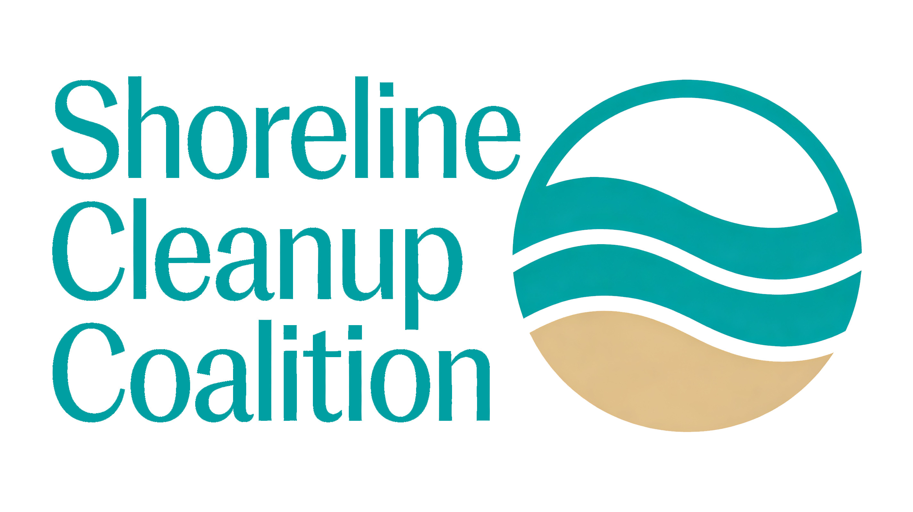
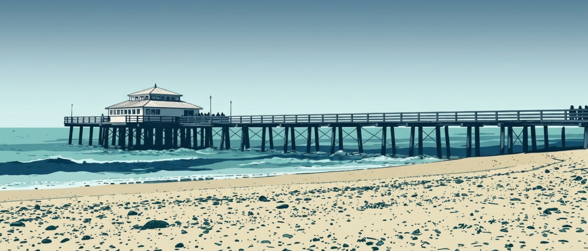
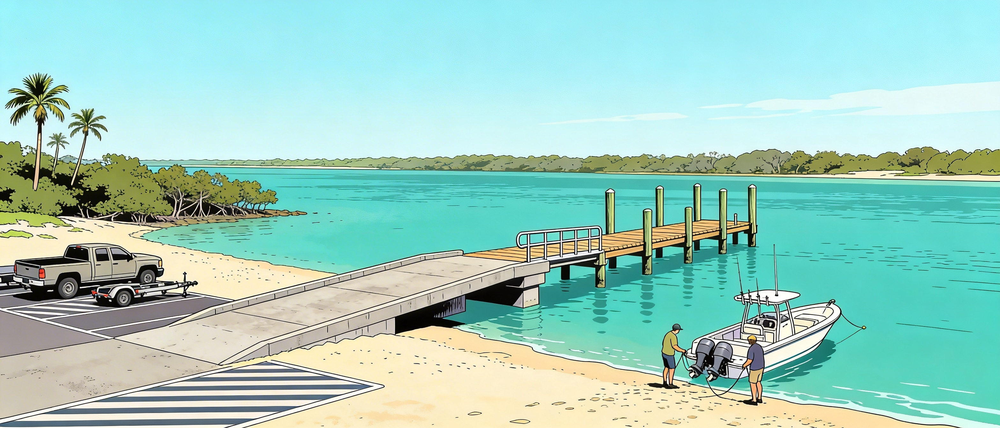
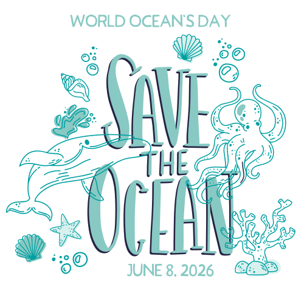

Coastal cleanups protect wildlife, keep our waters healthier, and make shoreline spaces safer and more enjoyable for everyone. By removing trash before it washes into rivers and oceans, volunteers help prevent animals from getting tangled in debris or mistaking plastic for food. Each cleanup also raises community awareness, inspiring everyday choices that help reduce pollution at the source.
Meet at the Main Street pier for the beach cleanup.

Meet at the boat ramp under the bridge for the Intracoastal Waterway cleanup.

Celebrate World Ocean's Day and invite friends to next year's cleanup.

"⭐️ 3 people have RSVP'd to this event!"
Please use the form below to let us know which cleanup days
you'll be joining and how many people will be in your group.
For the beach cleanup on Saturday, June 6, volunteers will
meet at the Main Street pier.
For the Intracoastal
Waterway cleanup on Sunday, June 7, we'll gather at the
Boat Ramp under the bridge.
We recommend arriving 15-20
minutes early to check in, pick up supplies such as gloves,
bags, and grabbers, and hear a brief safety overview.
Each event is expected to run for about two to three hours,
or until all assigned areas have been covered.
At the end
of each day, we'll tally the number of bags collected and
note any unusual items as a simple way to measure our impact
and share results with the community.
🎟️ Wendy with a group of 5 RSVP'd.
🎟️ Torvald with a group of 3 RSVP'd.
🎟️ Leopold with a group of 2 RSVP'd.
Beach Cleanup... 🚀 Engage! 🚀
Don't forget to arrive a few minutes early, and
definitely don't forget the rest of your cleanup crew!

Participate in other beach cleanups or even Adopt A Beach